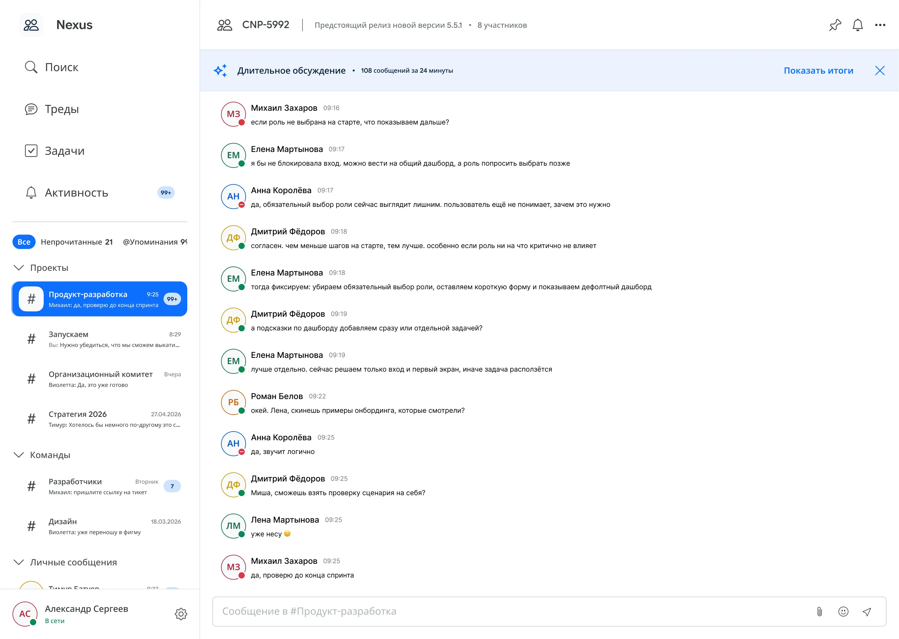

Дизайн-решения
Четыре функции, спроектированные как система. Каждая закрывает свою задачу, но архитектура едина: разные типы коммуникативных задач занимают разные пространства в интерфейсе.
Информационная архитектура
Главный принцип: разные типы коммуникативных задач занимают разные пространства. Одна из ключевых проблем из исследования: всё подряд в одном списке: сообщения, упоминания, статусы задач, уведомления о файлах. Визуально неразличимый поток. Разбить его на отдельные зоны: это само по себе снижение когнитивной нагрузки.
Макет: двухколоночный. Левый сайдбар: навигация и список чатов. Правая область: контент текущего чата.
Сайдбар, четыре раздела: Поиск (централизованный поиск по всему: сообщениям, файлам, людям, задачам), Треды (вся коммуникация, список чатов с категориями), Задачи (отдельный реестр задач из переписки), Активность (агрегатор релевантных событий: ключевые слова, @-упоминания, реакции).
Список чатов разбит на категории: «Проекты», «Команды», «Личная переписка». Фильтры: «Все / Непрочитанные / @Упоминания». Аватар пользователя с индикатором статуса и кнопка «Установить статус» внизу сайдбара: точка входа в Ф2.

Ф4: создание задачи из сообщения
RICE: 119 / Приоритет 1. Что решает: задачи теряются в истории переписки; паттерн «непрочитанное как todo»; переключение контекста при создании задачи в отдельном трекере.
Как работает. При наведении на любое сообщение появляется контекстная панель с четырьмя иконками: реакция, ответить в тред, создать задачу, меню «...». Размещение в ховер-панели, а не в меню: осознанное решение. функция обнаруживаема без клика.
При клике открывается модалка «Создать задачу». Чат остаётся виден позади, сохраняет контекст. Поля: «Название» (автозаполнение текстом сообщения с пометкой «из сообщения»), «Исполнитель», «Срок», «Приоритет» (три варианта с цветовой кодировкой: высокий/средний/низкий), «Описание». Внизу: исходное сообщение как контекст задачи.
После создания: в чате появляется карточка задачи: артефакт переписки. Все участники видят, что договорённость зафиксирована. Одновременно задача появляется в разделе «Задачи» в сайдбаре. Цвет дедлайна нарастает с приближением срока: нейтральный → жёлтый → красный. Принцип ambient notification: задача не кричит о себе, пока время есть.
Альтернатива: кнопка создания задачи только в меню «...». Тепловые карты из тестирования показали: при ховер-панели люди находили функцию легко. Глубокое меню снизило бы обнаруживаемость и success rate (Ф4 получила лучший результат в тестировании: 91.7%).
Ф1: AI-суммаризация обсуждения
RICE: 63 / Приоритет 2. Что решает: диагональное чтение длинных тредов; ситуация «вернулся — не понимаешь, что пропустил»; повторные вопросы коллегам «что решили?».
Триггер: плашка «Длительное обсуждение». Когда в чате накопилось достаточно сообщений за короткий период, над лентой появляется плашка: «Длительное обсуждение · 47 сообщений за 1 ч 20 мин» с кнопкой «Показать итоги». Плашка не обязательная и не блокирующая: появляется один раз, не возвращается, пока не придёт новая волна.
После нажатия запускается обработка. Сразу показывается пометка «Генерация... Видно только вам», не после завершения. Это убирает тревогу «вдруг уже отправилось в чат».
Готовое резюме: три блока: «Контекст» (1–2 предложения о теме), «Принятые решения» (нумерованный список с ответственными и датами), «Открытые вопросы». Под резюме пометка «Видно только вам» и три кнопки: «Закрепить в чате» (primary), «Создать задачу» (ведёт в Ф4 с предзаполненными данными), «Редактировать».
Почему «видно только вам» по умолчанию: в рабочей переписке не все обсуждения нейтральны. Бывают чувствительные темы и незакрытые вопросы. Если суммаризация публична, пользователь не будет её использовать в таких чатах. Приватная по умолчанию: функция работает везде.
Ф2: статусы, автоответы и ключевые слова
RICE: 47 / Приоритет 3. Что решает: статус «в сети» воспринимается как гарантия немедленного ответа; дублирующие запросы из-за непрозрачной доступности; «Не беспокоить» как единственный инструмент: слишком грубый.
Принцип: двустороннее решение. Не просто защита пользователя от входящих, но и сигнал для отправителя, чтобы он мог принять решение.
Механизм 1: выбор статуса. Четыре состояния с цветовой кодировкой по семантике светофора: «В сети» (зелёный), «Не беспокоить» (красный), «На встрече» (жёлтый), «Не в сети» (серый). Это единственная информация, которую видит отправитель перед тем, как написать.
Механизм 2: настройки автоответа. Для каждого статуса: «Активно до» (автосброс по времени), «Повтор» (расписание для регулярных периодов), «Исключения» (кто дозванивается через любой статус), «Автоответ» (текст с @-упоминаниями). Как автоответ выглядит у получателя: под строкой ввода появляется плашка: «Артём сейчас занят · Ответит после 16:00 · По срочным вопросам: @Маша». Отправитель принимает решение до нажатия «Отправить».
Механизм 3: уведомления по ключевым словам. Слова и фразы, при появлении которых уведомление приходит даже если чат заглушён. Настройки: чувствительность к регистру, морфология, @channel. Лента «Активность» превращается в персонализированный агрегатор: только то, что соответствует ключевым словам или @-упоминаниям.
Почему три механизма: статусы решают прозрачность для отправителя. Автоответы решают ожидания. Ключевые слова решают «я отключил всё — и пропустил важное». Вместе закрывают всю цепочку: от «я занят» до «но не пропущу критичное».
Ф3: многокритериальный поиск файлов
RICE: 46 / Приоритет 4. Что решает: поиск требует точного названия; нет комбинированных фильтров; повторный запрос документа как норма.
Принцип: поиск начинается с намерения, а не с точного запроса. Фильтры доступны до ввода текста, не после.
Пустое состояние: три последних поисковых запроса с иконкой типа результата + блок «Быстрые действия». Не тупик, а точка перехода.
Фильтры-чипы сразу под строкой ввода: «от кого: [+]», «когда: [+]», «вложение: [+]». После итераций: с иконками, чтобы выглядели как интерактивные элементы. Фильтры применяются до ввода текста. Сценарий: кликает «от кого» → выбирает «Иванов С.» → кликает «вложение» → выбирает «Excel» → кликает «когда» → выбирает «Апрель–Май» → видит 4 файла. Без единого символа в строке поиска.
Подсказка под строкой при пустом поле: «Уточните поиск через фильтры». Результаты обновляются в реальном времени. Каждый результат: иконка типа + имя файла + название чата + дата + подсветка совпадения в preview. Табы «Все / Сообщения / Файлы / Задачи / Люди». При активном фильтре «вложение: Excel» автоматически переключается на таб «Файлы».
Альтернатива: поиск файлов только в разделе «Файлы» конкретного чата. Именно этот паттерн и был проблемой: часть пользователей шла туда в тестировании и не могла найти нужный файл. Централизованный поиск с фильтрами: единое место для поиска чего угодно.
Как четыре функции работают вместе
| Связка | Как работает |
|---|---|
| Ф1 + Ф4 | После суммаризации кнопка «Создать задачу» ведёт прямо в Ф4 с предзаполненными данными. Ответственный и срок из «Принятых решений» подставляются автоматически. |
| Ф2 как контекст | Статусы и автоответы меняют коммуникативные нормы в команде. Давление «ответь прямо сейчас» снижается, асинхронная работа становится социально нормальной. Косвенно снижает частоту ситуаций, в которых нужны Ф1 и Ф3. |
| Ф3 как навигационный слой | Поиск по задачам (тип «Задачи» в поиске) позволяет находить задачи из Ф4 через тот же интерфейс. Архитектура едина. |